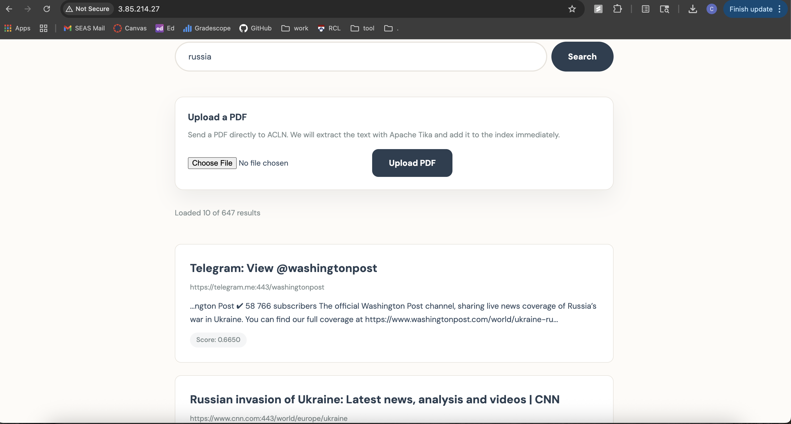
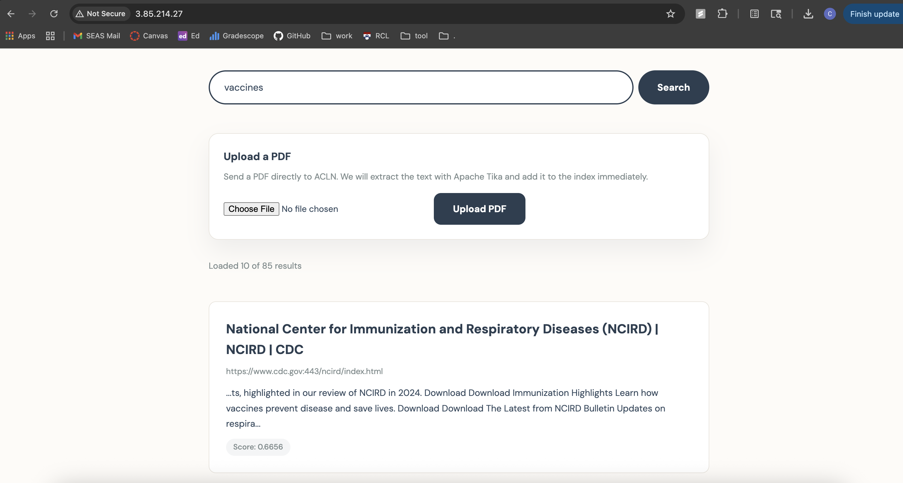
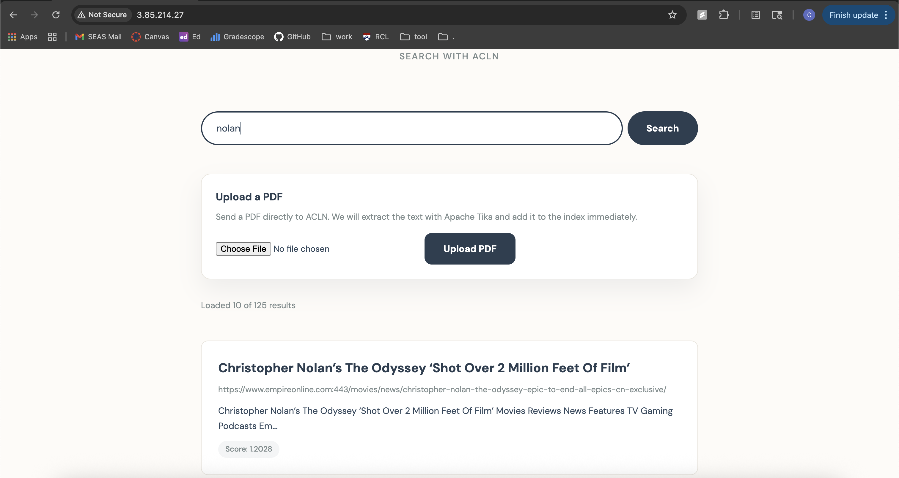
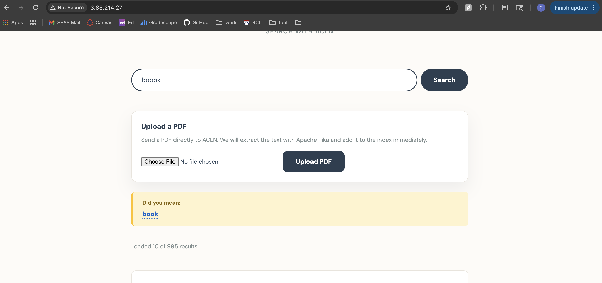
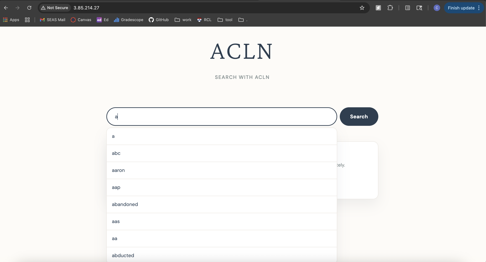
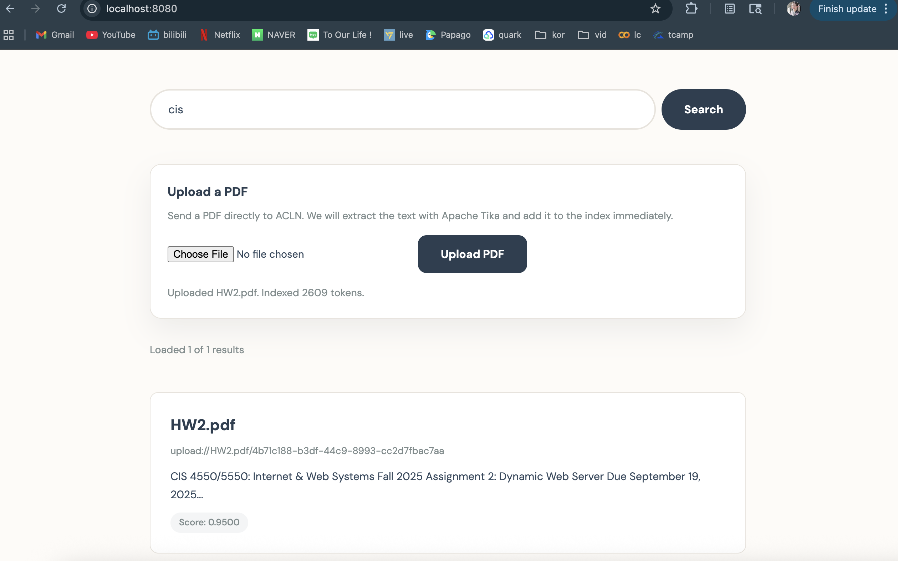
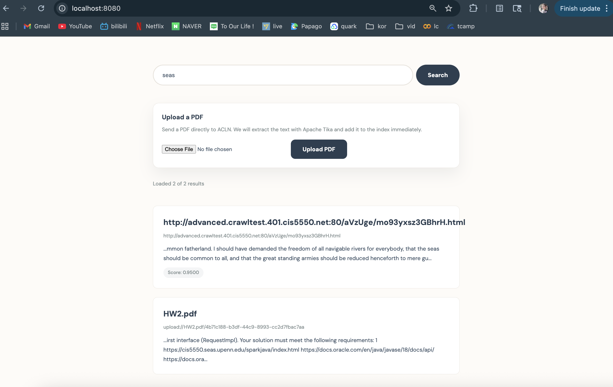
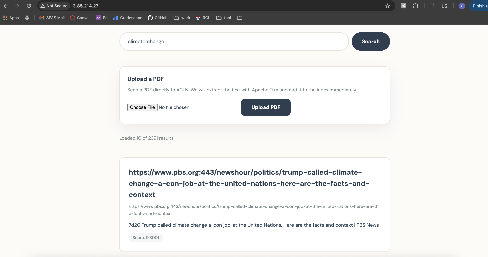

A cloud-deployable mini web search engine built end-to-end on a distributed KVS + Flame stack — robots-aware crawler, iterative PageRank, TF-IDF inverted index, and a custom HTTP server with ranked search, PDF ingestion, spellcheck, search suggestions, and 9-category query intent detection. Deployed on Amazon EC2, crawling 100–150K pages in under 9 hours.
Four components, each running as an independent process or Flame job, connected entirely through KVS tables — no direct inter-component communication. The clean separation means batch jobs (crawler, PageRank, indexer) can be re-run or restarted independently without corrupting the others, and the webserver issues only KVS lookups at query time with no batch computation in the serving path.
robots.txt per host, and enforces per-domain politeness delays. Extracts and normalizes outbound links with UrlUtils, deduplicates content by hash in contentSeen, and stores page HTML, metadata, and a semicolon-separated outbound link list in pt-crawl. Supports configurable page limits, blacklist filtering, multiple seed URLs, and verbose progress logging. Tunable request timeout and per-host scheduling drove the 9-hour final crawl throughput.pt-crawl. Consumes cleaned outbound-link data rather than re-parsing HTML, using hashed URLs as keys throughout. Explicitly emits (targetHash, "") for target-only nodes so all reachable pages receive PageRank mass. Handles dangling nodes with explicit mass redistribution: base = (1−D)/N + D·danglingMass/N. Convergence checked by joining old and new rank RDDs and computing max |new − old|. Intermediate RDDs aggressively destroyed each iteration to prevent KVS disk accumulation. Final scores streamed directly to pt-pageranks via KVSClient.put().pt-crawl, strips HTML with jsoup, enforces Latin-only token constraints, optionally applies Porter stemming, and optionally stores word positions for phrase queries. Produces three output tables: pt-index (token → posting list), pt-termfreq (token → docHash:tf per document), and pt-docstats (docHash → URL + token count). Column names hashed via Hasher.hash(rowKey + "|" + value) to avoid collisions. All outputs streamed directly to KVS; large intermediates destroyed eagerly to minimize disk footprint.SearchHandler tokenizes queries, retrieves postings from pt-termfreq, document lengths from pt-docstats, and PageRank from pt-pageranks in parallel KVS lookups, computes normalized TF-IDF and PageRank, and blends them with URL/title boosts. Additional features: spellcheck (edit distance ≤2, 20K-entry scan), prefix-based search suggestions, 9-category query intent detection, and infinite scroll. PdfUploadHandler integrates Apache Tika to extract PDF text and inject it into pt-crawl with a synthetic upload:// URL, making uploaded documents immediately searchable without re-running the batch indexer.Two primary signals — TF-IDF content relevance and global PageRank importance — blended linearly, with small bounded bonuses when query terms appear in the URL or extracted title. Both signals are normalized per result set before blending, so neither dominates by scale.
Each query is classified into the highest-scoring intent category based on keyword matching and structural signals (price patterns, citation markers, date patterns, URL-like queries). The detected intent surfaces task-specific result cards above the ranked list — e.g., a weather widget, shopping links, or dictionary-style definitions.
Each run informed the next. The first run exposed per-host delay tuning opportunities and visibility gaps in domain coverage. The second validated a refined configuration on a Wikipedia local test before scaling. The final EC2 run brought the system to production readiness with a stable coordinator, improved timeout handling, and more effective idle-worker utilization — all without sacrificing robots compliance.








Hasher.hash(url) as the canonical key format, the search frontend reduced almost entirely to orchestrating KVS lookups and score aggregation — no parsing, no re-fetching, no inter-component coordination.